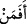
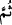
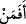

“Şu halde, kendisine güzel bir vaadde bulunduğumuz”
“, mevsûle ve mübtedâdır. Mânâsı: “Îman ve tâatine karşılık kendisine güzel bir
vaadde bulunduğumuz mü’min kimse” demektir. Bu vaad; cennet ve sevâbıdır. Çünkü
vaadin güzelliği, vaadolunan şeyin güzel oluşuna bağlıdır.
Kâşifî der ki: Dikkat edin! Biz bir kimseye âhirette cenneti, dünyada da muzafferiyeti
vaad etmişiz.
“Ve ardından ona kavuşan kimse,”
Bu mü’min kimse, kendisine vaadolunan bu güzel ecir ve mükâfâta mutlaka
kavuşacaktır. Çünkü Allah, vaadinden dönmez.
“(Sırf) dünya hayatının geçici menfaat ve zevkini yaşattığımız,” yâni muhabbeti
mihnetle karışık olan dünya hayatının metâından yararlandırdığımız, demektir. Dünya
devleti, musibete dönüşebilir; malı ve zenginliği yok olup makam ve mevkii de
değişiverir. Kezâ dünyanın yiyeceği ve balı da hemen Ebucehil karpuzunun zehrine
dönüverir. “Sonra kıyamet gününde (azab için) huzurumuza getirilenler arasında
bulunan kimse gibi midir?”
Âyetin ikinci yarısındaki “ ” de mevsûledir ve birincisinin haberidir. Yani, dünya
” de mevsûledir ve birincisinin haberidir. Yani, dünya
hayatının geçici metâı ile nimetlendirdiğimiz, sonra da kıyamet gününde hesab için,
yahut cehennem ateşi ve ilâhî azâb için getirilecek olan kâfir kimse gibi midir?
“ (sonra)” zamanda terâhî ifâde eder. Yani, Allah’ın huzuruna getirilme hâli, dünyâ
menfaatlerinden faydalanma hâlinden sonra gelir, demektir. Yahud da tertîb içindir. “” deki “ (fâ)”nın mânâsı; dünyâ ehli ile âhiret ehlinin arasındaki benzerliğin reddini
tertîb içindir. Nasıl ki, dünya metâı ile Allah katındakiler birbirinden açıkça farklı ise,
bu iki grub insan da birbirine denk, eş ve benzer olamaz. En üstün vaad ile ikram
olunan, Mevlâ’yı bulan mü’min kimse; vaîde (azab vaadine) uğrayan, ahirette
cehenneme düşen kâfir kimse gibi değildir. Kâfirin âhirette cehenneme düşmesi,
dünyada elde ettiği geçici zevklerin karşılığıdır. Denilir ki: Nice bir anlık şehvet vardır
ki, sâhibini uzun zaman üzüntüde bırakır.
Bir arı, bir karıncanın bin bir güçlükle taneyi yuvasına götürdüğünü görünce, ona
şöyle seslendi: Ey karınca, bu kendine yüklediğin nasıl bir meşakkat, seçtiğin nasıl bir
yüktür? Gel de benim yediğim içtiğim yeri bir gör. En güzel ve en hoş yiyecekler
benden artmadıkça padişahlara ulaşmaz. İstediğim yere konar, istediğimi seçer ve
istediğimden yerim. Bu sözleri söylerken uçtu ve kasap dükkânında bir etin üzerine
kondu. Kasap elindeki bıçağı o mağrur arının üzerine öyle bir vurdu ki onu iki parçaya
böldü ve yere attı. Karınca geldi ve ayağından çekip onu götürürken arı şöyle diyordu:
“Beni istemediğim yere götürme” dedi. Karınca da “Kim hırs ve şehveti sebebiyle
dilediği, arzu ettiği yere konarsa, onu istemediği yere götürürler” diye karşılık verdi.